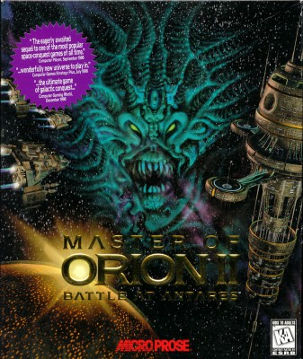

The Internet is Serious Business!
Home > Video Games > PC > Master of Orion II: Battle at Antares
This is an old science fiction turn-based strategy game that, to the best of my memory, I believe I got sometime in 2001. Unfortunately, I cannot remember if my mother went out shopping one day, saw the game, and bought it for me because she thought it would be the sort of game I would enjoy, or if I tagged along with my mother while she was shopping, saw the game myself, and then asked her to buy it for me because of the rather cool-looking monster on the cover art:

(That is an Antaran, by the way.)
Master of Orion II: Battle at Antares (MOO2) is old enough of a game that it was rated Kids to Adults (K-A) instead of Everyone (E), but I would hardly say that it's a game for kids: although there is nothing in it that is inappropriate for children, it is nevertheless quite a complex game (the manual is over 160 pages in length) that most kids would probably find too difficult, too boring, or both.
This game was very different from nearly every other PC game I owned at the time, which were overwhelmingly children's educational games with bright colors and happy, friendly, smiling characters; by contrast, MOO2 was dark and even depressing, particularly the main pieces of background music (they are the first 5 minutes and 40 seconds of the video). There is no in-game tutorial, and because I certainly didn't bother to read the manual back then, as a kid I was very confused whenever I was playing this game. I had almost no understanding of the game's mechanics, and so oftentimes I would simply click around randomly on menus or advance to the next turn just to see what would happen. I lost so many times back then, even on the easiest difficulty level, that the game's defeat cutscene (it is the first 30 seconds of the video) has been forever engraved on my memory. Despite losing so much, though, I never got angry at MOO2; I knew even then that this game was a special one in my collection, and I accorded it the proper respect by handling the CD and jewel case very carefully.
I played this game a handful of times during the early 2000s, each time learning a few more aspects of gameplay, but I was still largely ignorant of most of the game's mechanics, and so I still lost constantly. The last time in the 2000s that I ever played MOO2 was probably around 2007/2008, when I was a little older and thus (I believed) more capable of grasping the game's complexity, but even then I remember losing—or, at least, struggling to win—on the easiest difficulty. Ever since then, I have not played the game until April 2019, when, as an adult now, I read through the manual and played a few full games starting from the easiest difficulty level, until I managed to win a game even on the Hard difficulty.


 All written materials on this Web site are my own, and all are released under the Do What the Fuck You Want to Public License Version 2.
All written materials on this Web site are my own, and all are released under the Do What the Fuck You Want to Public License Version 2.
This page last modified on 28 March 2021.